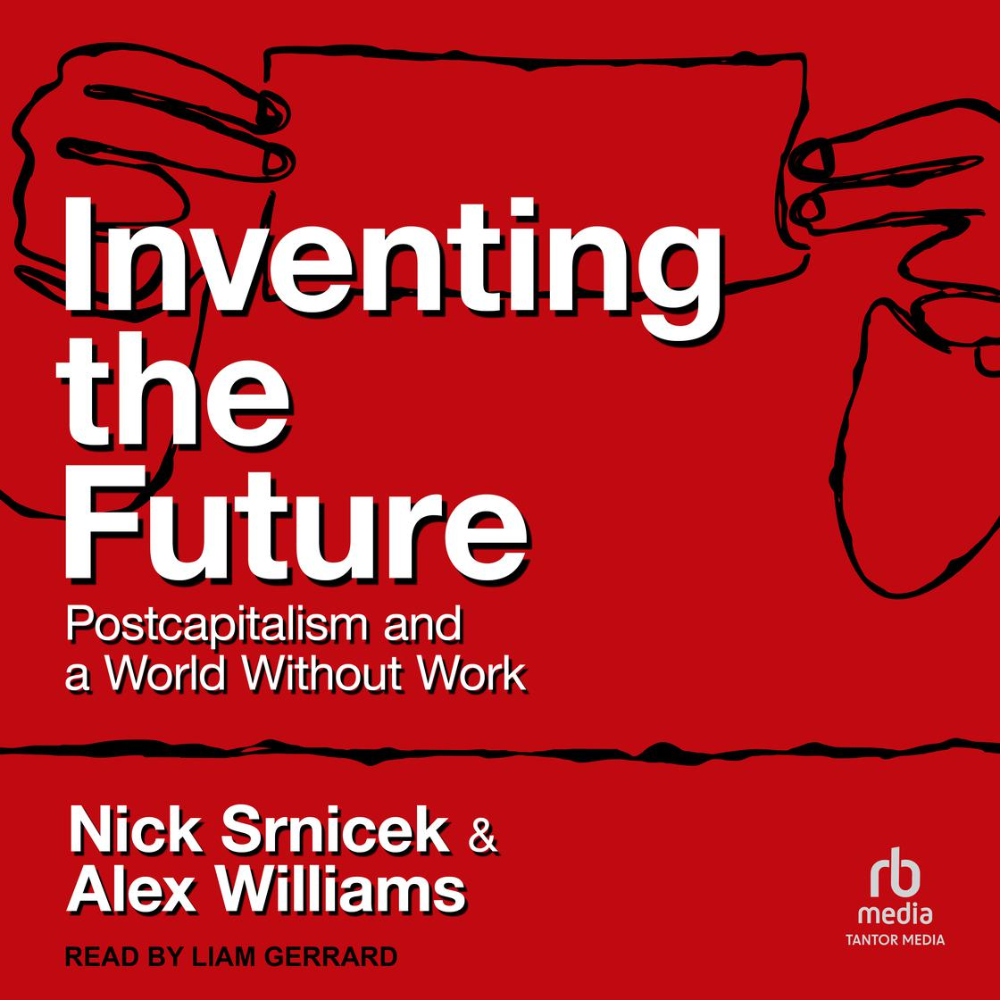

(Audio) Inventing the Future, by Srnicek and Williams
Sunday September 29, 2024
Inventing the Future: Postcapitalism and a World Without Work is by far the best exposition of a post-scarcity direction that I've seen. The criticism of folk politics as impotent in important ways because of its focus on immediacy is incisive. The authors invite us to grow up and construct the world we want to live in.
I enjoyed their alternate interpretation of the phrase "resistance is futile," emphasizing the difference between fighting some external actor and being an active builder. Trying to stop someone else (political, corporate, etc.) may or may not succeed, but regardless it will not create a better alternative. If all we do is resist, we never make anything new.
The authors demand full automation, as in Fully Automated Luxury Communism, and indeed Bastani might be counted among the second-hand dealers in these ideas (though he has contributions as well).
There's a bunch in the book on the Mont Pelerin Society and the authors recommend a leftist "ecology of organizations" might achieve similar success. They mention the New Economics Foundation, but otherwise I don't know a lot of organizations that might be part of such an ecology.
The authors advocate for higher wages. Higher wages can be good for the people who get them, but the main focus is on higher wages encouraging more automation. The authors also advocate for Universal Basic Income (UBI). They note some challenges with UBI, but I don't think they completely resolve a conflict here.
What happens to (market-based) wages if people have UBI? Probably lots of jobs don't have takers any more. This must be the mechanism the authors are thinking of, and why they emphasize that UBI must really be enough to live on. But surely some jobs would be doable for lower wages, if people sort of enjoy them to begin with.
There's no mention of inflation in connection with UBI, which continues to concern me. How can it work without price controls or similar? If everyone has more money, surely rent goes up, grocery prices go up, etc. etc. just as we saw during the pandemic.
As with Universal Basic Services (UBS) I have to think that everything currently sold on the market would have to edge away from being sold for profit. A program of UBI can be undone by inflation, and indeed the goal should be for deflation, as we achieve extreme supply, prices go to zero, and eventually money can be retired. Postcapitalism is in the subtitle, but there aren't many details here.
The book is better than the movie
The book is not written in a broadly accessible style. It's inside baseball for academics who appreciate Marxist criticism and don't blink at phrases like "reproductive labor." So I was excited to hear about a 2020 documentary based on the book, thinking it might speak to a broader audience.
The film is feature length, but the style is the unwatchable, seizure-inducing kind you might walk quickly past in an art museum. Voices read snippets from the book and other sources, sometimes reminiscent of Waiting for Godot. Several times we watch sex toys shimmy on a grey Lego baseplate. It's hard to imagine a movie that could contribute less to spreading the message of Inventing the Future. Avoid.
“A politics without demands is simply a collection of aimless bodies.” (page 105)
One criticism of the book might be that it gets to demands but doesn't go much farther in terms of concrete mechanisms for achieving them. Four day work week! Full automation! Okay, but what can people do apart from writing their senators?
“Famously, Oscar Wilde once said that the problem with socialism was that it took up too many evenings.” (page 177)
I don't think I'd heard this before; it's good, isn't it? Most people just want to live their lives. Hence problems, hence opportunities.
